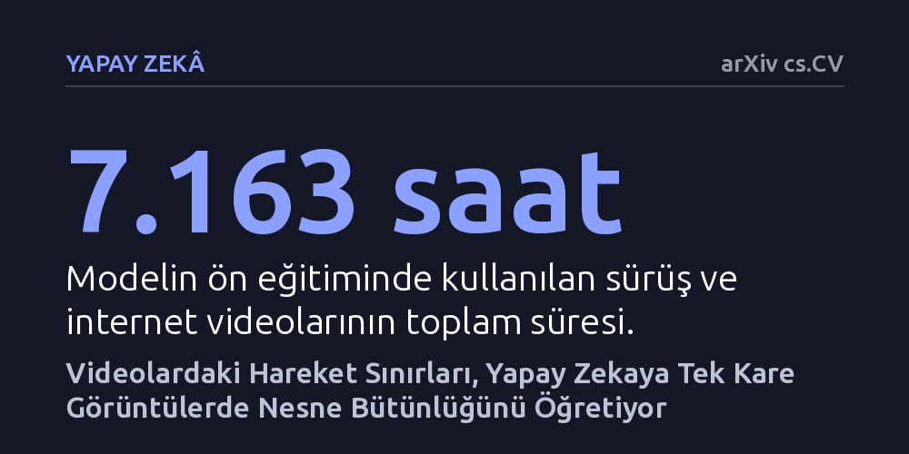

YAPAY-ZEKA · arXiv cs.CV · 2026-09-08
Araştırmacılar, insan etiketi kullanmadan ham videolardaki hareket sınırlarından nesne kavramını öğrenen bir yapay zeka yöntemi geliştirdi. Bu yaklaşımın, tek kare görüntülerde nesne sınırlarını ve üç boyutlu geometriyi mevcut modellerden daha başarılı kavradığı gösterildi.
Yapay zekanın fiziksel dünyadaki nesneleri ayırt edebilmesi için insan çizimi etiketlere mahkûm olmadığını, hareket ipuçlarının tek başına nesne kavramını inşa edebileceğini gösterir.

Mevcut yapay zeka modelleri internetten toplanan devasa fotoğraf arşivleriyle eğitilse de çoğu zaman sahneyi bir bütün olarak algılar; pikseller arasındaki anlamsal kategorileri bilse bile her bir nesnenin bağımsız sınırlarını ve fiziksel bütünlüğünü korumakta zorlanır. Bir nesnenin nerede başlayıp nerede bittiğini anlamak, fiziksel dünyayı kavramak ve özellikle robotik ya da otonom sürüş gibi alanlarda güvenli kararlar alabilmek için temel bir gerekliliktir.
Biyolojik sistemlerde canlılar dünyayı durağan fotoğraflarla değil, sürekli hareket eden bir çevreyi gözlemleyerek öğrenir. Yeni doğmuş bir canlı, çevresindeki bir varlık hareket ettiğinde arka plandan ayrılan o kütlenin bağımsız bir nesne olduğunu kendiliğinden fark eder. Bu çalışma, yapay zekaya nesne kavramını öğretmek için pahalı insan etiketleri yerine hareketin sunduğu bu doğal ayrıştırma gücünden yararlanıp yararlanamayacağımızı araştırıyor.
Araştırmacılar, insan eliyle etiketleme ya da kamera kalibrasyonu gerektirmeyen biyolojik esintili bir yöntem kurguladı. Toplam 7.163 saatlik sürüş ve internet videosu taranarak ardışık kareler arasındaki optik akış yani hareket yönü ve hızı hesaplandı. Benzer biçimde hareket eden piksel grupları kümelenerek nesne sınırlarını gösteren sahte etiket maskelerine dönüştürüldü ve ilk aşamada 195 milyon denetimli kare elde edildi.
Daha sonra modelin kendi tahminleriyle hareket kanıtlarını bir araya getiren hareket doğrulamalı kendi kendine eğitim tekniği uygulandı. Bu adımla denetim hacmi 421 milyon kareye ulaştırıldı ve Swin mimarisine dayalı büyük görsel kodlayıcılar eğitildi. Öğrenilen temsiller, daha verimli çalışabilen farklı boyutlardaki modellere bilgi damıtma yöntemiyle aktarıldı.
Yalnızca hareket sınırlarıyla eğitilen modeller; tek bir fotoğraftan derinlik tahmini, 3 boyutlu nesne algılama, 3 boyutlu doluluk kestirimi ve uçtan uca sürüş planlaması gibi karmaşık testlere tabi tutuldu. Modeller, hem insan denetimli hem de geleneksel denetimsiz ön eğitim görmüş güçlü temel modellerle yarışabilir ve birçok alanda onları geride bırakan sonuçlara ulaştı.
En dikkat çekici başarı, sahnenin üç boyutlu geometrisine ve tekil nesne sınırlarına duyarlı görevlerde görüldü. Model, durağan bir fotoğrafa baktığında dahi piksellerin bağımsız bir nesneye ait olduğunu ve nesnenin uzamsal derinliğini yüksek doğrulukla ayırt edebildi.
Elde edilen sonuçlar, videolardaki hareketin tek başına durağan görüntü modellerine nesne kavramını aşılamak için güçlü bir gözetim kaynağı olabileceğini kanıtlıyor. Bu yaklaşım, yapay zekanın fiziksel dünyayı anlaması için milyonlarca liralık insan etiketleme maliyetine mahkûm olmadığını ve internetteki devasa video havuzunun doğrudan bir öğrenme laboratuvarına dönüşebileceğini gösteriyor.
Bununla birlikte, yöntemin hareket etmeyen nesnelerdeki performansı ve farklı robotik platformlardaki sınırları henüz araştırılmayı bekliyor. Çalışmanın bağımsız araştırmacılarca hakem denetiminden geçirilmesi, bu umut verici yaklaşımın pratik uygulamalardaki yerini daha da netleştirecektir.